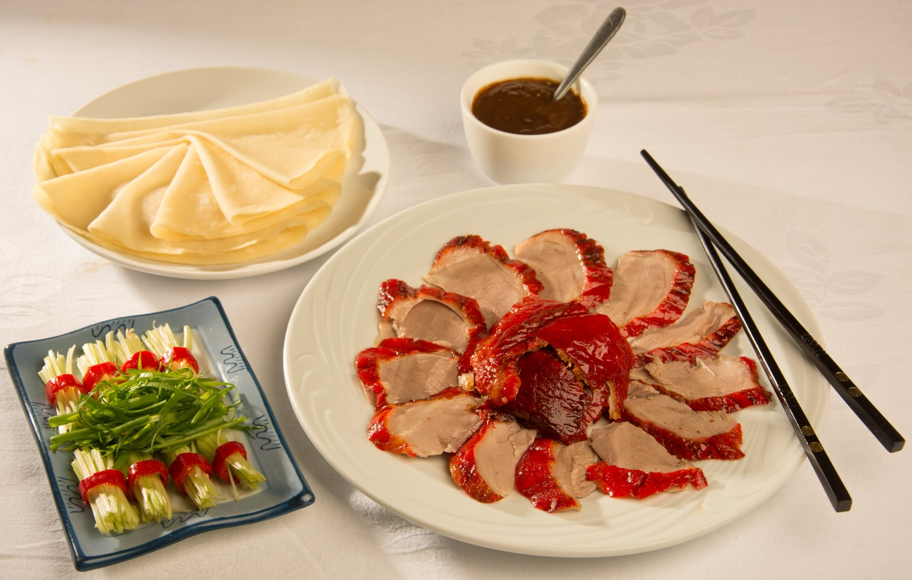
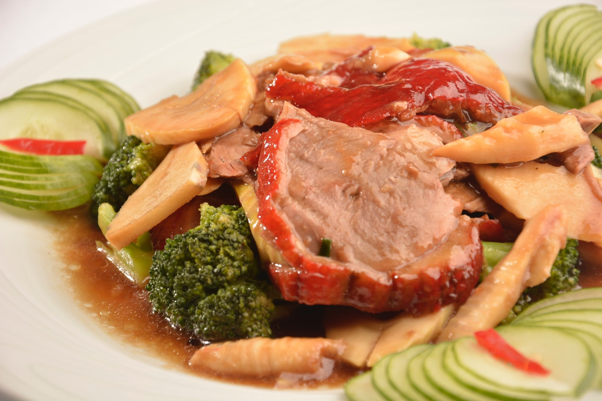
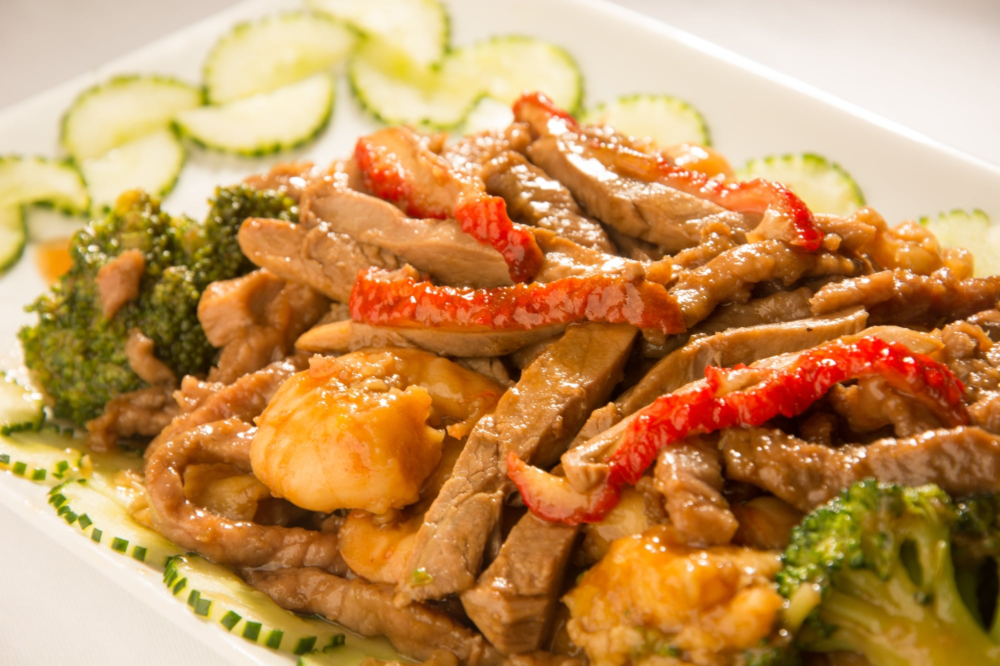
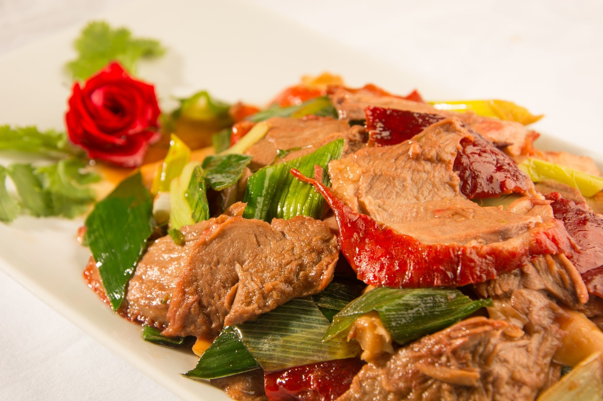

Pato Laqueado (tipo Beijing)
北京烤鸭👑Pato laqueado em fatias, acompanhado de panquecas (10un) e molho missô

Pato em Fatias com Brócolis ao Molho Chinês
鸭片炒笋片Pato em fatias com brócolis e bambu

Pato Desfiado com Camarão, Frango e Bambu
鸭丝炒什巾Saboroso pato desfiado com camarões, frango e bambu ao molho chinês

Pato em Fatias com Alho Poró ao Molho Ostra
鸭片炒大蒜Pato em fatias ao alho poró embebido no clássico molho de ostras